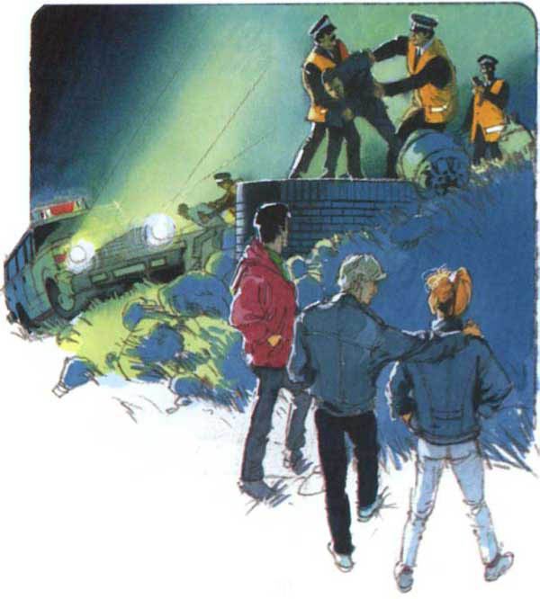

Listen to Part 1:
Cảnh sát hành động rất nhanh. Một xe cảnh sát tới chỗ buồng điện thoại. Charles nhảy vào xe và họ lái nhanh về phía nhà nhỏ.
Cảnh sát bắt giữ hai người đàn ông ở đầu giếng.
Một giờ sau, Sheila, Paul và Charles đã có mặt ở đồn cảnh sát tại Barconney.

‘Nhờ có các bạn, chúng tôi đã bắt được bọn chúng và lấy lại được tiền,’ cảnh sát trưởng nói. ‘Chúng tôi đã bắt giữ thêm hai người đàn ông khác tại Nhà ga Llanvoy.
‘Nhưng có năm người mà,’ Paul nói. ‘Các anh có bắt được tên cầm đầu không? Hắn ta tên là Frank.
Sheila, Charles và Paul đã nghỉ đêm ở nhà cảnh sát trưởng. Sáng hôm sau, cảnh sát trưởng đi sớm.
‘Tôi phải về đồn cảnh sát,’ ông nói với họ. ‘Tôi sẽ gọi lại cho các bạn vào sáng mai.'
Đang ăn sáng, Sheila bật radio lên.
‘Đây là thông báo của cảnh sát. Cảnh sát đang truy nã Frank Steel… bốn mươi tuổi… người đàn ông này được nhìn thấy lần cuối trên đường ray đến Ga Llanvoy vào rạng sáng hôm nay. Anh ta rất nguy hiểm…
Listen to Part 2:
Sheila tắt radio.
‘Kỳ nghỉ mà bắt đầu theo kiểu lạ nhỉ,’ cô nói.
Sau đó, chuông điện thoại reo. Paul nghe máy. Là cảnh sát trưởng.
‘Có tin vui đây,’ cảnh sát trưởng nói. ‘Một xe cảnh sát đã bắt được Frank Steel.
Paul đặt điện thoại xuống.
‘Cảnh sát đã bắt được Frank Steel,’ anh ta nói với hai người kia.
‘Tuyệt,’ Sheila nói. ‘Bây giờ chúng ta có thể quay về nhà nhỏ và bắt đầu kỳ nghỉ của mình rồi.'